学了那么久就是学不会抓禁，反而是被抓N次。。。。。。。。
学了那么久就是学不会抓禁，反而是被抓N次。。。。。。。。以下，将分成三个小标题来分明别类地解释关於禁手的种种攻防技巧U
一．逼禁的基本；
二．一子双禁；
三．禁手活用例解说。
一．逼禁的基本
相信大家都知道，日规或国际规黑不能下双活三、双四以及长连。然而实战中执黑的一方不可能无缘无故u作许多禁点让白方有机可趁，所以，执白的一方必须想尽办法去u造黑方的禁点来加以攻击，而这就是以下我想要说明的“逼禁的基本”。
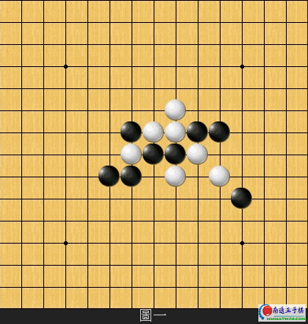
图一U如图一所示，黑方当前并没有任何明显的禁点出现。那N，白方要如何运用逼禁的技巧来取胜呢？
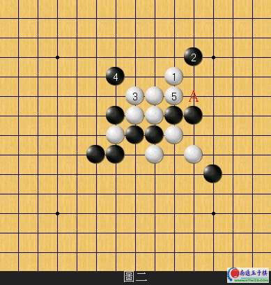
图二U白1n四好棋！先手u造了黑方A点的双活三禁点。接著白3n四顺势白5活三之后，黑无法逃离下在A点禁手败的命运。
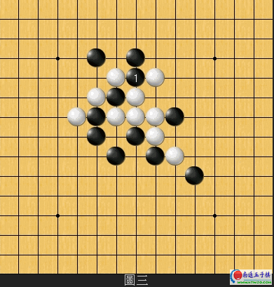
图三U黑1活三意图破坏白阵是欠考虑的一著坏棋，白方如何逞诫黑1的失误？
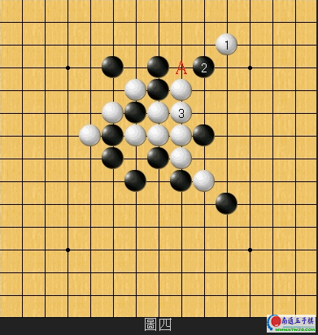
图四U白1跳n四u造黑A的双四禁点之后，白3再n四简单逼黑下双四的禁手取胜。
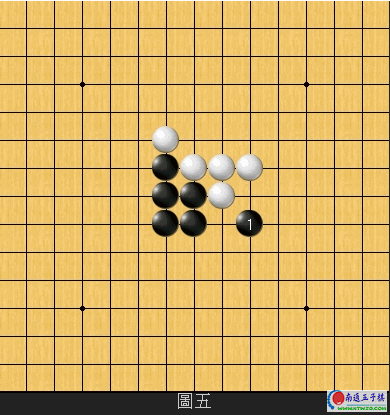
图五U黑1跳三，白方有没有速胜的手段？
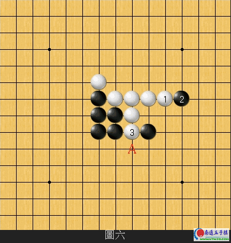
图六U透过前面两例的介绍之后，我想应该有不少读者能够轻易的看出白方的逼禁手段吧！白1先行n四u造A点的禁手后再去阻挡黑的跳三，一切简单解决！
二．一子双禁
以下，介绍一个更加深入的逼禁技巧。
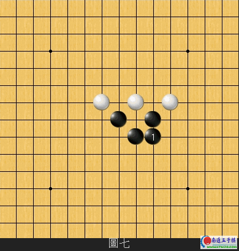
图七U黑1补强黑阵之后，从盘面形势上来看似乎黑方乃一片大优局面。但其实白方在此时可以袢∏擅畹谋平的手段来逆转！五子棋实在是巧妙有趣的一项棋艺。
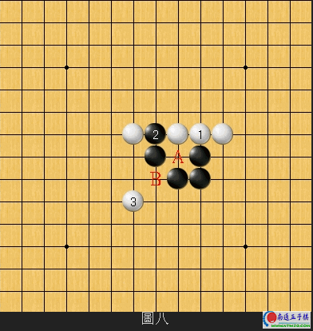
图八U白1n四是必杀的第一步！此棋同时u造了黑方A与B的两个双活三禁点。接著下白3是一步巧妙的手筋，瞄著黑A位和B位的禁点。黑方没有任何有效的手段可以渡过当前的危机。以下，对这个变化我们再做一些更深入一点的探讨。
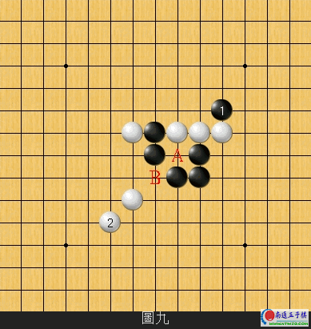
图九U续图八，黑如在1位意图挣扎的话，则白2一剑封喉胜负立判！黑A与B的禁点两者必下其一。
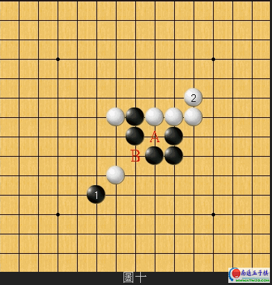
图十U同理，黑1换个方向防守则白2黑仍无解。
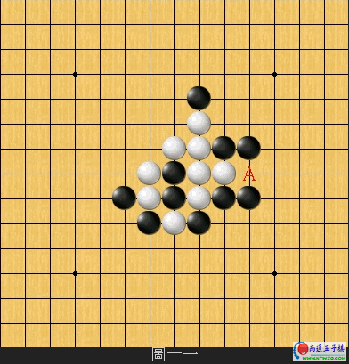
图十一U再举一个典型一子双禁的例子。图十一当中目前黑只有A橐桓鏊活三禁点而已，要想立即对黑方这个弱点来进攻恐怕不太容易，所以U
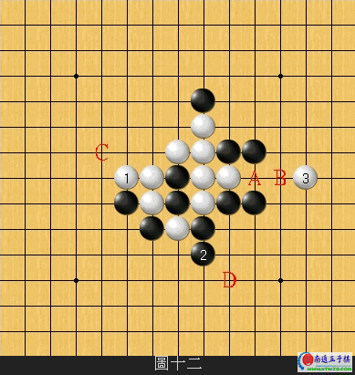
图十二U白1活三让黑2去挡一手的同时u造了黑B另一个双活三的禁点，紧接著白3又是一步巧妙的手筋！黑无法同时躲过A和B两个禁点。途中，黑2如果挡在C位的话则白D跳四之后下在3位黑仍无解。
三．禁手活用例解说
以下，介绍几个需要利用到逼禁手筋的技巧给各位看看。
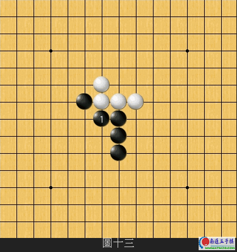
图十三U黑1活三，白方该如何使用逼禁的技巧？
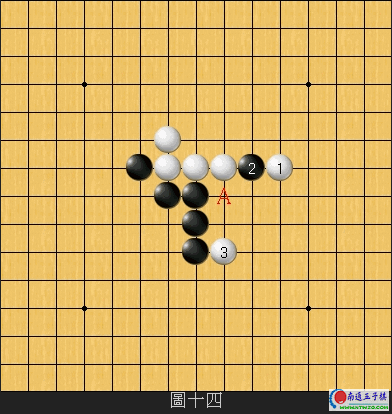
图十四U经过前面几粒的介绍之后我想，各位都应该已经能很容易轻易看出，白1先行跳四的手段了吧！白3防守之后，A位同时是黑方和白方的双活三点，稍微细算一下后续的变化之后将不难理解，黑败的事实v然吧！
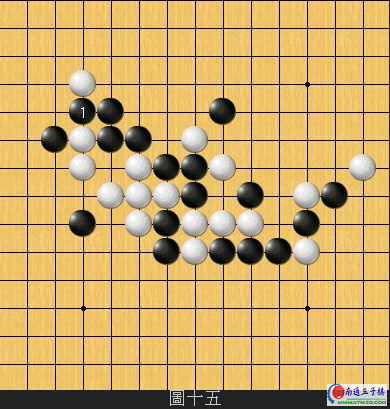
图十五U黑1挡住白方的活跳三之后的局面。单从盘面来看，白方的阵型似乎很凌乱而且没有什N威胁性。但在此局面使出逼禁的技巧则可顺利打开局面！
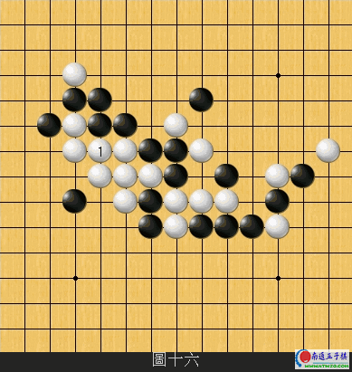
图十六U本图褡缘谝唤烊国大专连珠v五子棋w锦标赛最后一轮的实战。白1槭嫡匠鱿值拇竺钍郑〗酉吕次蘼酆诜饺绾蜗露嘉薹ㄌ庸被逼禁的命运，有兴趣的读者可以自行试著去拆解接下来的变化。
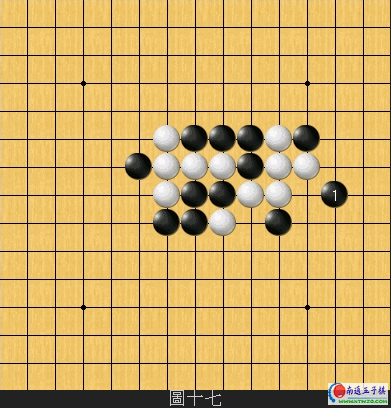
图十七U黑1防守后，白方如何利用逼禁的妙手取胜？
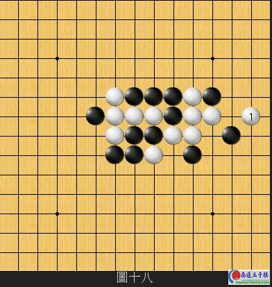
图十八U白1橄嗟本哂蟹稍拘韵敕ǖ囊徊胶闷澹【植可虾谖蘼廴绾畏朗囟继硬涣私手或连续追胜的命运！当中的妙处请有兴趣者自行往后续变化研究。
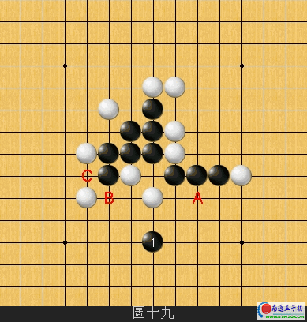
图十九U黑1槭嫡匠＜的连络
果然够艺术的。。。
好象对禁手的敏感度不高啊！！晕！
好棒啊,以前老让人逼,想学就是不知道方法.......
不时候想抓禁，不容易
学了那么久就是学不会抓禁，反而是被抓N次。。。。。。。。
5555555555555555555555555555555

图十六（横轴从左至右以A、B、C…标记；纵轴从下至上以1、2、3…标记）
试解如下（如有错误，敬请高手指正）：白B9、B12跳冲四，可抓到黑C11三三禁手；或者白F6、D8冲四，可抓到黑C8三三禁手。注意：1、冲四次序不能错。2、抓哪一点，须视黑2行棋情况而定。
图十八（横轴从左至右以A、B、C…标记；纵轴从下至上以1、2、3…标记）
试解如下（如有错误，敬请高手指正）：白J7活三，黑M10挡（若黑于H6挡，则白N11跳冲四，迫黑于M10落子）；白K11冲四，黑K12是必然一手，接着白O9冲四可抓到黑M9三三禁手。
学了那么久就是学不会抓禁，反而是被抓N次。。。。。。。。
5555555555555555555555555555555